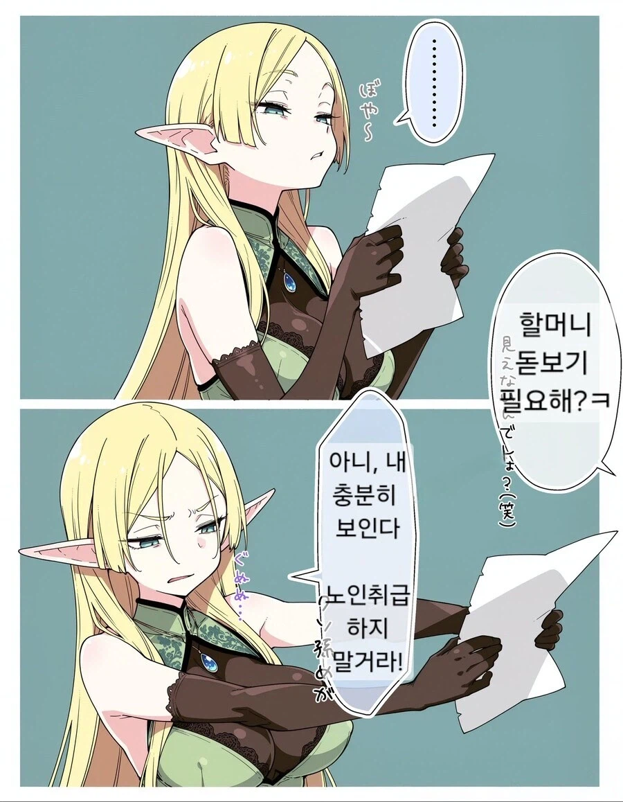
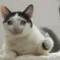
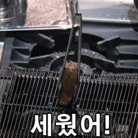

65 · 17 · 5 시간 전 · 원문

수집 당시 댓글 17개
악덕팬더 · 15 시간 전
milmill · 15 시간 전
와가슴씨발련ㅋㅋ
↳ 답글 · 우메와모모의평범한일상 · 8 시간 전
ㅋㅋㅋㅋㅋㅋㅋㅋㅋㅋㅋㅋㅋㅋㅋㅋㅋㅋㅋㅋㅋㅋ
↳ 답글 · 두려워요 · 6 시간 전
ㅋㅋㅋㅋㅋㅋ
↳ 답글 · 케로로중사 · 6 시간 전
개츄
↳ 답글 · 푸크린 · 5 시간 전

↳ 답글 · 이야빨통이 · 5 시간 전
ㅋㅋㅋㅋㅋㅋㅋㅋㅋㅋㅋㅋ
↳ 답글 · 섹시코만도 · 4 시간 전
솔직한 청년
흑야야 · 8 시간 전
저분이 내 아내가 될 분이시라고? 그런데 동시에 내 어머니이자 할머니 증조할머니 고조할머니 그리고 현조할머니시기도 하다는 말인가?
↳ 답글 · 듀플로 · 5 시간 전
그 정도면 남자쪽 유전자는 별로 안 남았겠는데
↳ 답글 · 탄약반장 · 5 시간 전
DNA가 별로 안남아서 ㄹㅇ 여자낳으면 클론수준되는거 아니냐
↳ 답글 · 피릉피릉 · 5 시간 전
할머니랑 한다고 경악하는 엘프 클리셰
어리석은중생 · 6 시간 전
할머니 사랑해
Rectify · 5 시간 전
슴부먼트 덜렁덜렁 하악
만섭 · 5 시간 전
겉모습은 안늙는데 시력은 떨어지는건가
베터맨 · 5 시간 전
업어드리고 싶네... 문도 두드려드리고
↳ 답글 · 나를묶고가둔다면사랑도묶 · 4 시간 전

댓글
수집 당시 댓글 17개
악덕팬더 · 15 시간 전
milmill · 15 시간 전
와가슴씨발련ㅋㅋ
· 우메와모모의평범한일상 · 8 시간 전
ㅋㅋㅋㅋㅋㅋㅋㅋㅋㅋㅋㅋㅋㅋㅋㅋㅋㅋㅋㅋㅋㅋ
· 두려워요 · 6 시간 전
ㅋㅋㅋㅋㅋㅋ
· 케로로중사 · 6 시간 전
개츄
· 푸크린 · 5 시간 전

· 이야빨통이 · 5 시간 전
ㅋㅋㅋㅋㅋㅋㅋㅋㅋㅋㅋㅋ
· 섹시코만도 · 4 시간 전
솔직한 청년
흑야야 · 8 시간 전
저분이 내 아내가 될 분이시라고? 그런데 동시에 내 어머니이자 할머니 증조할머니 고조할머니 그리고 현조할머니시기도 하다는 말인가?
· 듀플로 · 5 시간 전
그 정도면 남자쪽 유전자는 별로 안 남았겠는데
· 탄약반장 · 5 시간 전
DNA가 별로 안남아서 ㄹㅇ 여자낳으면 클론수준되는거 아니냐
· 피릉피릉 · 5 시간 전
할머니랑 한다고 경악하는 엘프 클리셰
어리석은중생 · 6 시간 전
할머니 사랑해
Rectify · 5 시간 전
슴부먼트 덜렁덜렁 하악
만섭 · 5 시간 전
겉모습은 안늙는데 시력은 떨어지는건가
베터맨 · 5 시간 전
업어드리고 싶네... 문도 두드려드리고
· 나를묶고가둔다면사랑도묶 · 4 시간 전
